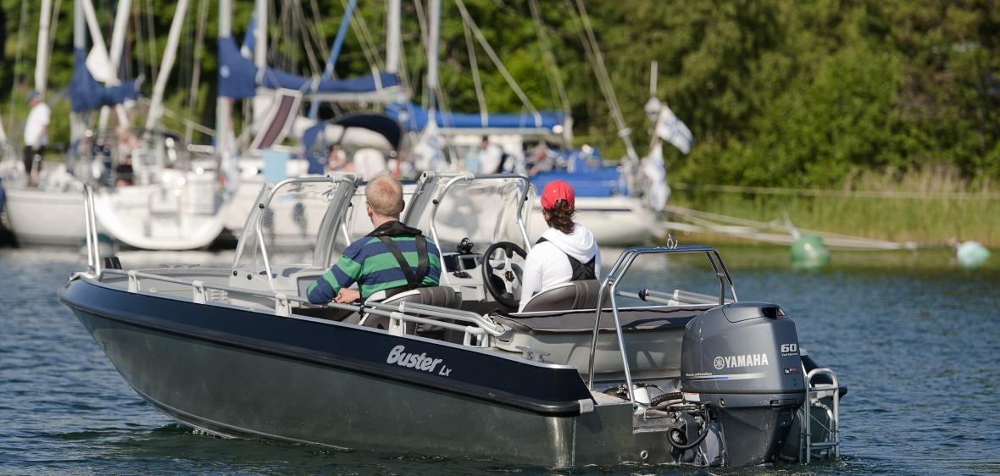
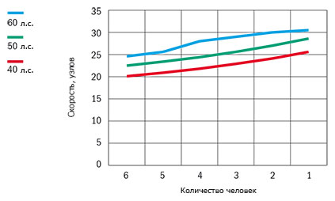

Катер Buster Lx (Бустер Lx)
Buster Lx (Бустер Lx) - самая популярная модель в странах Скандинавии, спортивная и комфортабельная, трансформирующаяся в соответствии с вашим пожеланиями, в соответствии с вашим стилем. Buster Lx (Бустер Lx), спроектирована специально для вас, любителей активного отдыха на море! Оснащённая встроенным топливным баком, это самая малая модель семейства Buster, с комфортным мягкими креслами водителя и штурмана. Великолепный цвет борта – чёрный сатин заметен и на большой скорости. Этот компактный Buster гарантирует быть замеченным!
Buster Lx (Бустер Lx), специально спроектирован для активных любителей отдыха на воде, для тех, кто хочет наслаждаться отдыхом в одиночку, с друзьями или всей семьёй. Лодка предназначена для комфортного путешествия компанией до шести человек. Мягкие сиденья, сиденья-боксы, а также тент, дополнительное оборудование, формируют просторную защищённую кабину, удобную для более длительных путешествий. Тент относится к опции CANVAS.
Buster Lx (Бустер Lx) – спортивный фаворит модельного ряда Buster. При трансформируемости такого класса, не удивительно, что Buster Lx (Бустер Lx) – самая продаваемая модель. Модель с самоотливным кокпитом гарантирует лёгкое и быстрое передвижение по воде в любую погоду. Спокойная стоянка на пристани никаким образом не подходит к энергичному характеру! Buster Lx (Бустер Lx) хочет быть в движении в течение всей навигации. В тёмные осенние вечера, безопасную эксплуатацию катера обеспечивают навигационные огни, основное оборудование, и съёмная мачта. Этот Buster используется до поздней осени.
Технические характеристики катера:
| Параметр | Buster Lx |
|
Длина |
5.04 м |
|
Ширина |
1.98 м |
|
Масса (Без двигателя) |
415 кг |
|
Вместимость |
6 человек |
|
Рекоменд. мощность двигателя |
40 - 60 л.с. |
|
Емкость топливного бака |
53 л |
|
Осадка при полной нагрузке |
0,29 м |
|
Максимальная скорость |
31 узел |
|
V-угол дна |
16° |
| График скорости | |
|  | |
Стандартное оборудование:
- Гидравлическое рулевое управление NFB
- Консоль управления, ветровое стекло
- Консоль левая, ветровое стекло
- Стационарная дверь между консолями
- Закрывающиеся багажные отсеки (система запирания замков одним ключом)
- Съёмное заднее сиденье
- Мягкие кресла Offshore 2шт. с чехлами
- Забортный трап
- Огнетушитель
- Чехол для аккумулятора
- Центральный выключатель с автоматическими предохранителями
- Автоматическая трюмная помпа
- Стационарный топливный бак
- Навигационные огни
- Мачта, съёмная
- Электрический разъём 12V
- Самоосушающийся кокпит
Дополнительное оборудование:
- Комплект мягких подушек
- Тент на корму, с защитным чехлом
- Тент стояночный
- Штанга для буксировки вейкбордиста
- Сиденье-бокс 45 л.
- Боковое сиденье
- Носовой релинг, правый
- Подставка для установки дополнительного мотора
- Подставка для крепления датчика эхолота
- Компас
- Система запирания(трос, замки Abloy, система запирания одним ключом)
- Мягкая подушка, заднее сиденье
- Мягкая подушка, спинка заднего сиденья
- Мягкая подушка, сиденье-бокс, 45 л.
- Мягкая подушка, боковое сиденье
- NAVI 5*
- Comfort*
- Canvas*
*Дополнительные опции устанавливаемые на заводе-изготовителе
NAVI 5: Картплоттер Garmin 526s, Компас Silva C58, Датчик эхолота с креплением
Comfort: Подушки спинки заднего сиденья, заднего сиденья
Canvas: Ходовой тент с ящиком для хранения и дверью между консолями


{kind=link}
{kind=link}
{kind=link}
{kind=link}
{kind=link}